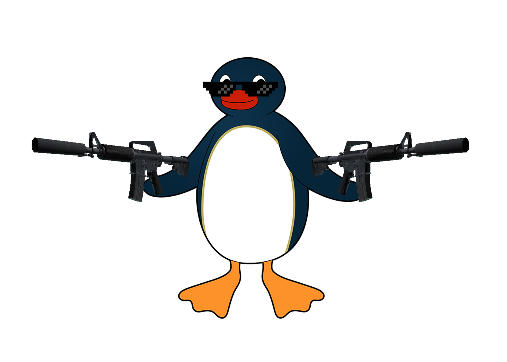
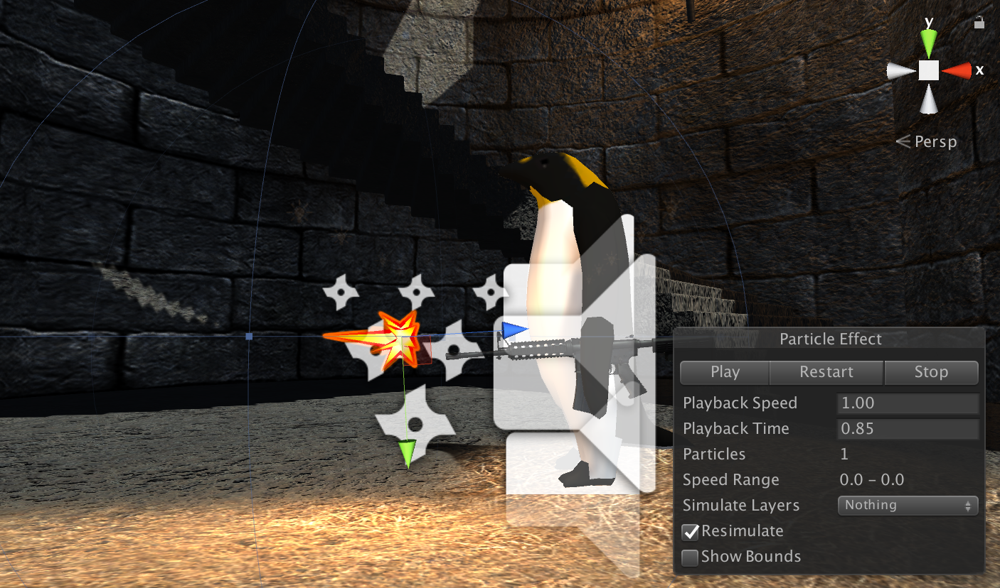
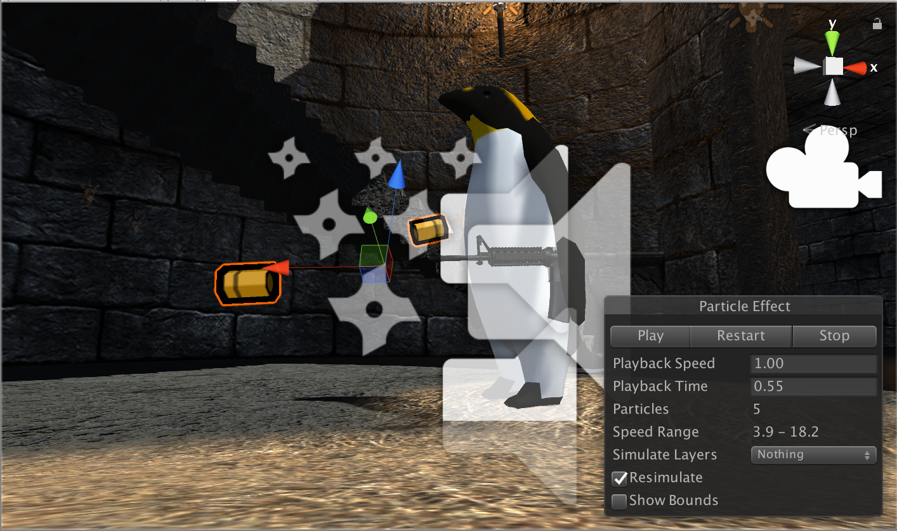
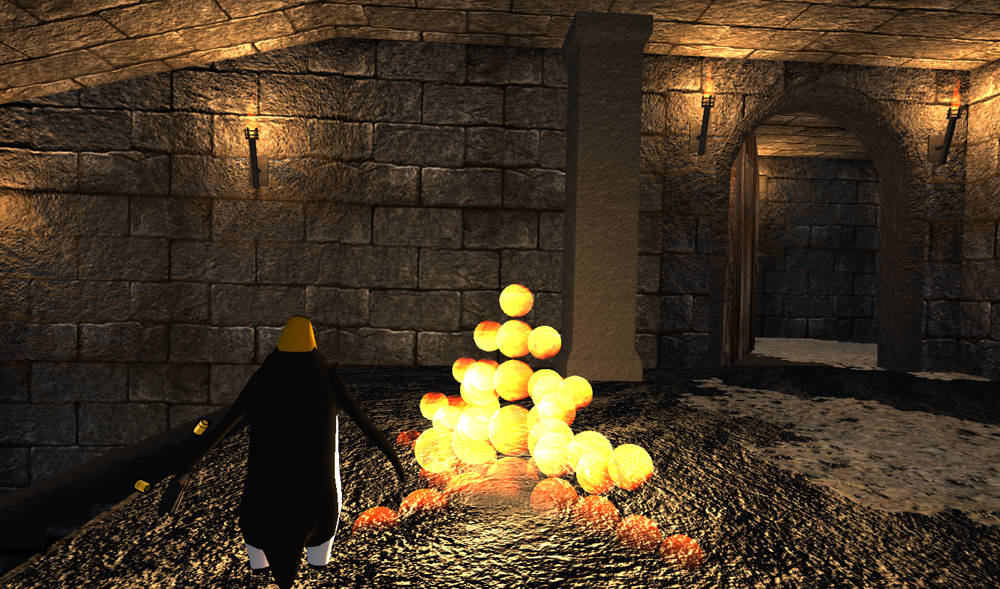

CS 184: Computer Graphics and Imaging, Spring 2018
Final Project: GUN N’ PENGUIN
Stanley Liu, Harry Li, Eric Tsai

Our Project
We are making a zombie shooter game in unity with a focus on different concepts we’ve learned in 184. As according to our schedule, we’ve built most of the core game. We will spend the rest of our time working on polishing the rest of the gameplay and graphics elements.
(penguin...) Braaaiiinssssss….
Shooting and Gun Shots Simulation
We implemented shooting calculation using raycast. From CS184, we learned to cast a ray and test the intersection. We used raycast for the gun. When user presses left click, we shoot a ray toward the position of gun pointing(camera position) with range of 100. If it hits something, ray cast would return the object it hits. We used this technique as our base for the shooting method. Also, I added point light to all the particles in particle system to simulate gun’s muzzle. Whenever user shoots, it emits a point light on the muzzle to simulate muzzle flash with particle systems like bullets shells.

We use Unity’s particle simulator to animate our muzzle flash.

We also use Unity’s particle simulator to animate our bullet shells.
Explosion Simulation
We used fractals to generate our explosion effects. So far we’ve completed our main script for creating a fractal using recursion and added it into the game. The generated fractal currently uses a sphere as a base mesh and forms the general shape, color, and lighting effects of an explosion. Next steps include finding a more suitable and realistic base mesh shape as well as adding smoke effects with the help of the particle system.

The explosion animation is demonstrated here.
Character Controller
I wrote my own character controller on the penguin. I calculate different velocity in 3D space based on player’s button like “W A S D”. I also bind left click on mouse to shoot action.
3D Sound Effect
I made an audio listener and put it on main character penguin. For each zombie, I made an audio source with range of 10 and the curve is linear rolloff to create variation of volume. When our main character is close to the zombie, the volume of zombie sound increases. For explosion sound effect, I used the linear combination of camera position and exploded object using formula: 0.9f*Camera.main.transform.position + 0.1f*transform.position. At this position I created an explosion sound effect instance that lasts even as the zombie object gets destroyed.
Enemy AI
We use Unity3d’s NavMeshAgent for our zombie AI. We set a lookRadius for each zombie so that it chases the player when entering its aggro zone. The NavMeshAgent then proceeds to chase the player while avoiding obstacles within by a certain distance.